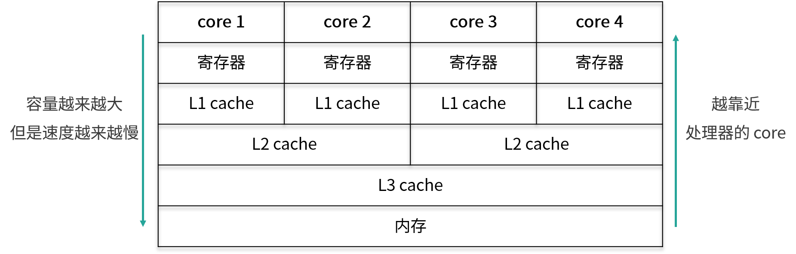
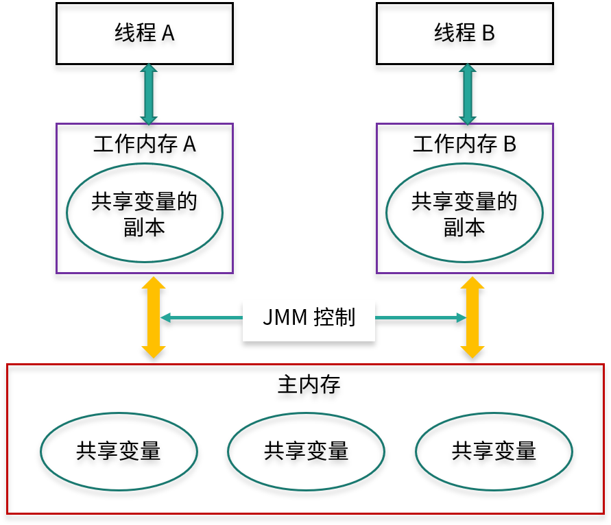

- 00 由点及面，搭建你的 Java 并发知识网.md
- 01 为何说只有 1 种实现线程的方法？.md
- 02 如何正确停止线程？为什么 volatile 标记位的停止方法是错误的？.md
- 03 线程是如何在 6 种状态之间转换的？.md
- 04 waitnotifynotifyAll 方法的使用注意事项？.md
- 05 有哪几种实现生产者消费者模式的方法？.md
- 06 一共有哪 3 类线程安全问题？.md
- 07 哪些场景需要额外注意线程安全问题？.md
- 08 为什么多线程会带来性能问题？.md
- 09 使用线程池比手动创建线程好在哪里？.md
- 10 线程池的各个参数的含义？.md
- 11 线程池有哪 4 种拒绝策略？.md
- 12 有哪 6 种常见的线程池？什么是 Java8 的 ForkJoinPool？.md
- 13 线程池常用的阻塞队列有哪些？.md
- 14 为什么不应该自动创建线程池？.md
- 15 合适的线程数量是多少？CPU 核心数和线程数的关系？.md
- 16 如何根据实际需要，定制自己的线程池？.md
- 17 如何正确关闭线程池？shutdown 和 shutdownNow 的区别？.md
- 18 线程池实现“线程复用”的原理？.md
- 19 你知道哪几种锁？分别有什么特点？.md
- 20 悲观锁和乐观锁的本质是什么？.md
- 21 如何看到 synchronized 背后的“monitor 锁”？.md
- 22 synchronized 和 Lock 孰优孰劣，如何选择？.md
- 23 Lock 有哪几个常用方法？分别有什么用？.md
- 24 讲一讲公平锁和非公平锁，为什么要“非公平”？.md
- 25 读写锁 ReadWriteLock 获取锁有哪些规则？.md
- 26 读锁应该插队吗？什么是读写锁的升降级？.md
- 27 什么是自旋锁？自旋的好处和后果是什么呢？.md
- 28 JVM 对锁进行了哪些优化？.md
- 29 HashMap 为什么是线程不安全的？.md
- 30 ConcurrentHashMap 在 Java7 和 8 有何不同？.md
- 31 为什么 Map 桶中超过 8 个才转为红黑树？.md
- 32 同样是线程安全，ConcurrentHashMap 和 Hashtable 的区别.md
- 33 CopyOnWriteArrayList 有什么特点？.md
- 34 什么是阻塞队列？.md
- 35 阻塞队列包含哪些常用的方法？add、offer、put 等方法的区别？.md
- 36 有哪几种常见的阻塞队列？.md
- 37 阻塞和非阻塞队列的并发安全原理是什么？.md
- 38 如何选择适合自己的阻塞队列？.md
- 39 原子类是如何利用 CAS 保证线程安全的？.md
- 40 AtomicInteger 在高并发下性能不好，如何解决？为什么？.md
- 41 原子类和 volatile 有什么异同？.md
- 42 AtomicInteger 和 synchronized 的异同点？.md
- 43 Java 8 中 Adder 和 Accumulator 有什么区别？.md
- 44 ThreadLocal 适合用在哪些实际生产的场景中？.md
- 45 ThreadLocal 是用来解决共享资源的多线程访问的问题吗？.md
- 46 多个 ThreadLocal 在 Thread 中的 threadlocals 里是怎么存储的？.md
- 47 内存泄漏——为何每次用完 ThreadLocal 都要调用 remove()？.md
- 48 Callable 和 Runnable 的不同？.md
- 49 Future 的主要功能是什么？.md
- 50 使用 Future 有哪些注意点？Future 产生新的线程了吗？.md
- 51 如何利用 CompletableFuture 实现“旅游平台”问题？.md
- 52 信号量能被 FixedThreadPool 替代吗？.md
- 53 CountDownLatch 是如何安排线程执行顺序的？.md
- 54 CyclicBarrier 和 CountdownLatch 有什么异同？.md
- 55 Condition、object.wait() 和 notify() 的关系？.md
- 56 讲一讲什么是 Java 内存模型？.md
- 57 什么是指令重排序？为什么要重排序？.md
- 58 Java 中的原子操作有哪些注意事项？.md
- 59 什么是“内存可见性”问题？.md
- 60 主内存和工作内存的关系？.md
- 61 什么是 happens-before 规则？.md
- 62 volatile 的作用是什么？与 synchronized 有什么异同？.md
- 63 单例模式的双重检查锁模式为什么必须加 volatile？.md
- 64 你知道什么是 CAS 吗？.md
- 65 CAS 和乐观锁的关系，什么时候会用到 CAS？.md
- 66 CAS 有什么缺点？.md
- 67 如何写一个必然死锁的例子？.md
- 68 发生死锁必须满足哪 4 个条件？.md
- 69 如何用命令行和代码定位死锁？.md
- 70 有哪些解决死锁问题的策略？.md
- 71 讲一讲经典的哲学家就餐问题.md
- 72 final 的三种用法是什么？.md
- 73 为什么加了 final 却依然无法拥有“不变性”？.md
- 74 为什么 String 被设计为是不可变的？.md
- 75 为什么需要 AQS？AQS 的作用和重要性是什么？.md
- 76 AQS 的内部原理是什么样的？.md
- 77 AQS 在 CountDownLatch 等类中的应用原理是什么？.md
- 78 一份独家的 Java 并发工具图谱.md
60 主内存和工作内存的关系？
本课时我们主要讲解主内存和工作内存的关系。
CPU 有多级缓存，导致读的数据过期
由于 CPU 的处理速度很快，相比之下，内存的速度就显得很慢，所以为了提高 CPU 的整体运行效率，减少空闲时间，在 CPU 和内存之间会有 cache 层，也就是缓存层的存在。虽然缓存的容量比内存小，但是缓存的速度却比内存的速度要快得多，其中 L1 缓存的速度仅次于寄存器的速度。结构示意图如下所示：

在图中，从下往上分别是内存，L3 缓存、L2 缓存、L1 缓存，寄存器，然后最上层是 CPU 的 4个核心。从内存，到 L3 缓存，再到 L2 和 L1 缓存，它们距离 CPU 的核心越来越近了，越靠近核心，其容量就越小，但是速度也越快。正是由于缓存层的存在，才让我们的 CPU 能发挥出更好的性能。
其实，线程间对于共享变量的可见性问题，并不是直接由多核引起的，而是由我们刚才讲到的这些 L3 缓存、L2 缓存、L1 缓存，也就是多级缓存引起的：每个核心在获取数据时，都会将数据从内存一层层往上读取，同样，后续对于数据的修改也是先写入到自己的 L1 缓存中，然后等待时机再逐层往下同步，直到最终刷回内存。
假设 core 1 修改了变量 a 的值，并写入到了 core 1 的 L1 缓存里，但是还没来得及继续往下同步，由于 core 1 有它自己的的 L1 缓存，core 4 是无法直接读取 core 1 的 L1 缓存的值的，那么此时对于 core 4 而言，变量 a 的值就不是 core 1 修改后的最新的值，core 4 读取到的值可能是一个过期的值，从而引起多线程时可见性问题的发生。
JMM的抽象：主内存和工作内存
什么是主内存和工作内存
Java 作为高级语言，屏蔽了 L1 缓存、L2 缓存、L3 缓存，也就是多层缓存的这些底层细节，用 JMM 定义了一套读写数据的规范。我们不再需要关心 L1 缓存、L2 缓存、L3 缓存等多层缓存的问题，我们只需要关心 JMM 抽象出来的主内存和工作内存的概念。为了更方便你去理解，可参考下图：

每个线程只能够直接接触到工作内存，无法直接操作主内存，而工作内存中所保存的正是主内存的共享变量的副本，主内存和工作内存之间的通信是由 JMM 控制的。
主内存和工作内存的关系
JMM 有以下规定：
（1）所有的变量都存储在主内存中，同时每个线程拥有自己独立的工作内存，而工作内存中的变量的内容是主内存中该变量的拷贝；
（2）线程不能直接读 / 写主内存中的变量，但可以操作自己工作内存中的变量，然后再同步到主内存中，这样，其他线程就可以看到本次修改；
（3） 主内存是由多个线程所共享的，但线程间不共享各自的工作内存，如果线程间需要通信，则必须借助主内存中转来完成。
听到这里，你对上图的理解可能会更深刻一些，从图中可以看出，每个工作内存中的变量都是对主内存变量的一个拷贝，相当于是一个副本。而且图中没有一条线是可以直接连接各个工作内存的，因为工作内存之间的通信，都需要通过主内存来中转。
正是由于所有的共享变量都存在于主内存中，每个线程有自己的工作内存，其中存储的是变量的副本，所以这个副本就有可能是过期的，我们来举个例子：如果一个变量 x 被线程 A 修改了，只要还没同步到主内存中，线程 B 就看不到，所以此时线程 B 读取到的 x 值就是一个过期的值，这就导致了可见性问题。
以上就是本课时的内容了，本课时主要介绍了 CPU 的多层缓存结构，以及由此抽象出来的 JMM 主内存和工作内存的结构图，并且还介绍了主内存和工作内存之间的关系。听完本课时，你会更加深刻的理解为什么会发生可见性问题。
© 2019 - 2023 Liangliang Lee. Powered by gin and hexo-theme-book.